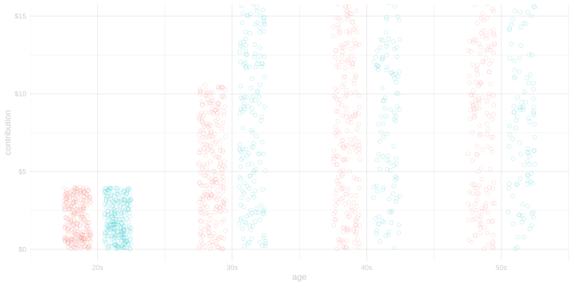
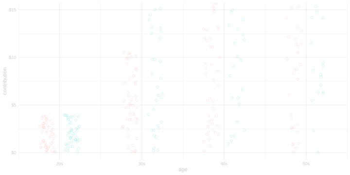
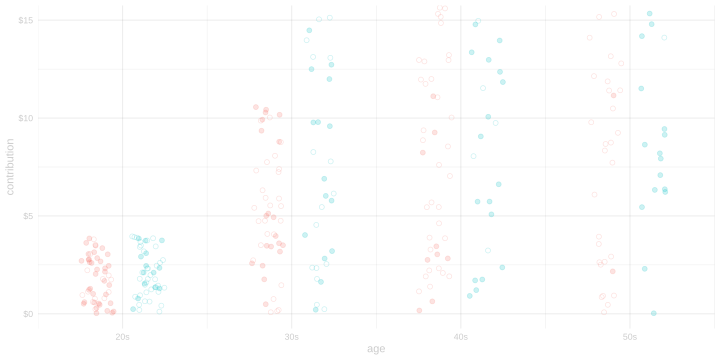

library(tidyverse)38 Homework: Simulating Experiments and Identifying the ATE
$$ \newcommand{X}{} \newcommand{Y}{}
$$
Introduction
Summary
In this homework, we’re going to focus on simulating conditionally randomized experiments and understanding what it means for the average treatment effect (ATE) to be identified. This is foundational material for understanding causal inference with covariates.
The new part is how we’re going to check that our estimators work. We’re going to simulate a conditionally randomized experiment. Having done this, we can show our estimator’s sampling distribution and check coverage just like we did in the last homework.
This is a real thing
We’ve been doing simulation all semester. That’s how we’ve been visualizing the sampling distribution of our estimators and calculating coverage. This is just bringing that into a causal inference context. This isn’t just something people do in class. It’s how people check that their estimators work and compare them to each other. Many papers in Machine Learning conferences and statistics journals use one or both of these simulation techniques. Maybe even the majority of them. Andrew Gelman has a blog post with the title Yes, I really really really like fake-data simulation, and I can’t stop talking about it..
What to Expect
You’ll see a few variations on things we’ve done before.
- Test estimators for causal effects using simulated data. Here that simulation involves a randomization step.
- Understanding how conditional randomization leads to identification of the ATE.
As usual, we’ll use the tidyverse.
Simulating the Data
We’re going to work with the example we talked about in Lecture 10.1 We’ve got a list of people that might donate to a political campaign—that’s our population—and we’re considering two ways of contacting them to ask for money: an email or a phone call. We’re running a pilot study to decide which one to use. In particular we want to estimate the average treatment effect of a call (vs. an email) on the amount they donate.
\[ \begin{aligned} \text{ATE} &= \frac{1}{m}\sum_{j=1}^m \qty{\textcolor[RGB]{0,191,196}{y_j(1)} - \textcolor[RGB]{248,118,109}{y_j(0)}} \qqtext{ where } \\ & \textcolor[RGB]{0,191,196}{y_j(1)} \text{ is amount person $j$ would donate if contacted by phone} \\ & \textcolor[RGB]{248,118,109}{y_j(0)} \text{ is amount person $j$ would donate if contacted by email} \end{aligned} \]
We call \(y_j(w)\) the potential outcome for person \(j\) under treatment \(w\). These are, of course, just things we’re imagining—we either we call them or we don’t—but that’s decision-making. When you think through your options, you’re imagining the consequences of some choices that you aren’t ultimately going to make.
To look into what happens when we try to estimate the ATE, we’ll sample people from our population and then randomize them to a treatment. In particular, we’ll do it like this.
- Sample without replacement from our population to choose who we’re going to contact.
- Assign each of them to treatment by flipping a weighted coin that may depend on that person’s age.
To simulate an experiment like this, we have to start one step back. ‘Step 0’ is making up the population.
Step 0
When we make up our population, we haven’t yet assigned these people to treatment, so we describe each person by their age \(x_j\) and their potential outcomes \(y_j(\cdot)\)2 This means our whole population is a list \(x_1, y_1(\cdot) \ldots x_m, y_m(\cdot)\). Here’s some code that makes up a population like this.
We’re going to use a random number generator to help us do this, but this isn’t a part of the random process we’re analyzing statistically. It’s just a way of making up \(m\) different things without having to do it all by hand. That means that we only do this once, even when we’re using simulating our study over and over to calculate the sampling distribution of our estimator. The population isn’t changing.
m = 1000
set.seed(1)
x = sample(c(20,30,40,50), m, replace=TRUE)
y = function(w) { (2 + 10*((x-20)/30 + w*sqrt((x-20)/30))) * runif(m, min=0, max=2) }
po.pop = data.frame(x=x, y0=y(0), y1=y(1)) Step 1
We choose a random sample \(X_1, Y_1(\cdot) \ldots X_n, Y_n(\cdot)\) by sampling without replacement from the population. These random variables \(X_i, Y_i(\cdot)\) are sampled uniformly-at-random from our population, so \(\mathop{\mathrm{E}}[Y_i(w)]=\frac{1}{m}\sum_{j=1}^m y_j(w)\).
n = 200
J = sample(1:m, n, replace=FALSE)
po.sam = po.pop[J,]Step 2
For each person (\(i\)) we’ve chosen, we flip a coin with probability \(\pi(X_i)\) of landing heads. Then, taking the corresponding potential outcome for each person, we get the sample we actually observe: \(W_1, Y_1(W_1) \ldots W_n, Y_n(W_n)\). We call \(Y_i(W_i)\), which is sometime just written as \(Y_i\), the realized outcome.
pi = function(x) { 1/(1+exp(-(x-30)/8 )) }
W = rbinom(n, 1, pi(po.sam$x))
sam = data.frame(w=W, x=po.sam$x, y=ifelse(W==1, po.sam$y1, po.sam$y0))Visualizing our Simulation Process
By flipping through the tabs below, you can see the process of simulating our experiment.
- In the first tab, you can see the population of potential outcomes we’re sampling from. Each pair \(\textcolor[RGB]{248,118,109}{y_j(0)}, \textcolor[RGB]{0,191,196}{y_j(1)}\) is drawn as a pair of points connected by a thin line. I’ve made them hollow because they’re potential outcomes—they don’t necessarily happen.
- In the second, you see the 200 of these that we’ve sampled.
- In the third, the circle corresponding to the realized outcome gets filled in.



Identifying the ATE
Let’s start by reviewing our identification results from Lecture 11. We know, because it’s right in the code above this, that these two sampling and randomization conditions are satisfied.
- \(X_1,Y_1(\cdot) \ldots X_n,Y_n(\cdot)\) are sampled uniformly-at-random from our population of covariate/potential-outcome pairs \(x_1,y_1(\cdot) \ldots x_n, y_n(\cdot)\).
- The treatment \(W_i\) is a binary random variable with a probability \(\pi(X_i)\) of being one that depends only the covariate \(X_i\).
When these conditions are satisfied, we can identify the mean potential outcome among people with each level of the covariate. That means we can work out a formula for it in terms of the distribution of the data we actually observe: the treatment, covariate, and realized outcome triples \(W_1,X_1,Y_1(W_1) \ldots W_n,X_n,Y_n(W_n)\). The mean of the potential outcome \(y_j(w)\) for treatment \(w\) among people with covariate value \(x\) is the conditional mean \(\mu(w,x)\) of the realized outcome \(Y_i(W_i)\) given that treatment \(W_i=w\) and covariate value \(X_i=x\).
\[ \begin{aligned} \mu(w,x) &\overset{\texttip{\small{\unicode{x2753}}}{This is just notation. $\mu(w,x)$ is defined by this equation.}}{=} \mathop{\mathrm{E}}[Y_i(W_i) \mid W_i=w, X_i=x] \\ &\overset{\texttip{\small{\unicode{x2753}}}{$Y_i(W_i)=Y_i(w)$ when $W_i=w$}}{=} \mathop{\mathrm{E}}[Y_i(w) \mid W_i=w, X_i=x] \\ &\overset{\texttip{\small{\unicode{x2753}}}{irrelevance of conditionally independent conditioning variables}}{=} \mathop{\mathrm{E}}[Y_i(w) \mid X_i=x] \\ &\overset{\texttip{\small{\unicode{x2753}}}{$Y_i(w)$ is sampled uniformly at random from the potential outcomes $y_j(w)$ of the $m_x$ units with $X_i=x$}}{=} \frac{1}{m_x} \sum_{j:x_j=x} y_j(w) \qfor m_x = \frac{1}{n} \sum_{i=1}^n 1_{=x}(X_i) \end{aligned} \tag{41.1}\]
From here, showing that the average treatment effect (ATE) is equal to the familiar quantity \(\Delta_{\text{all}}\) is a matter of averaging.
\[ \begin{aligned} \Delta_{\text{all}} &\overset{\texttip{\small{\unicode{x2753}}}{This equation defines $\Delta_{\text{all}}$}}{=} \mathop{\mathrm{E}}[ \mu(1,X_i) - \mu(0,X_i) ] \\ &\overset{\texttip{\small{\unicode{x2753}}}{Our within-group identification result @eq-within-group-identification}}{=} \mathop{\mathrm{E}}\qty[ \mathop{\mathrm{E}}[ Y_i(1) \mid X_i] - \mathop{\mathrm{E}}[Y_i(0) \mid X_i] ] \\ &\overset{\texttip{\small{\unicode{x2753}}}{Linearity of conditional expectations}}{=} \mathop{\mathrm{E}}\qty[ \mathop{\mathrm{E}}[ Y_i(1) - Y_i(0) \mid X_i] ] \\ &\overset{\texttip{\small{\unicode{x2753}}}{The law of iterated expectations}}{=} \mathop{\mathrm{E}}\qty[ Y_i(1) - Y_i(0) ] \\ &\overset{\texttip{\small{\unicode{x2753}}}{sampling uniformly-at-random}}{=} \frac{1}{m}\sum_{j=1}^m \left\{ y_j(1) - y_j(0) \right\} = \text{ATE}. \end{aligned} \tag{41.2}\]
Exercises
Solution
Locked (Week 13)
Solution
Locked (Week 13)
Solution
Locked (Week 13)